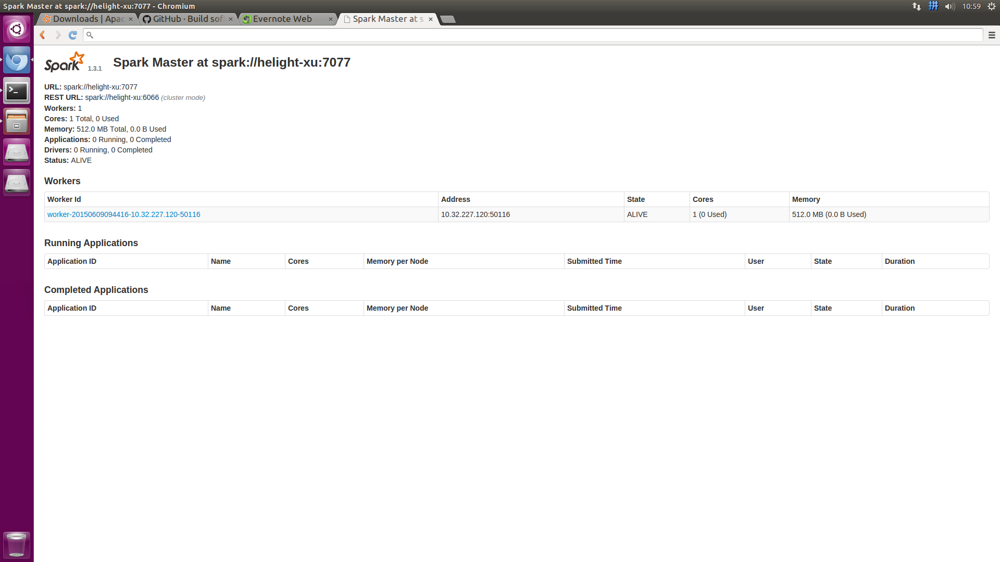
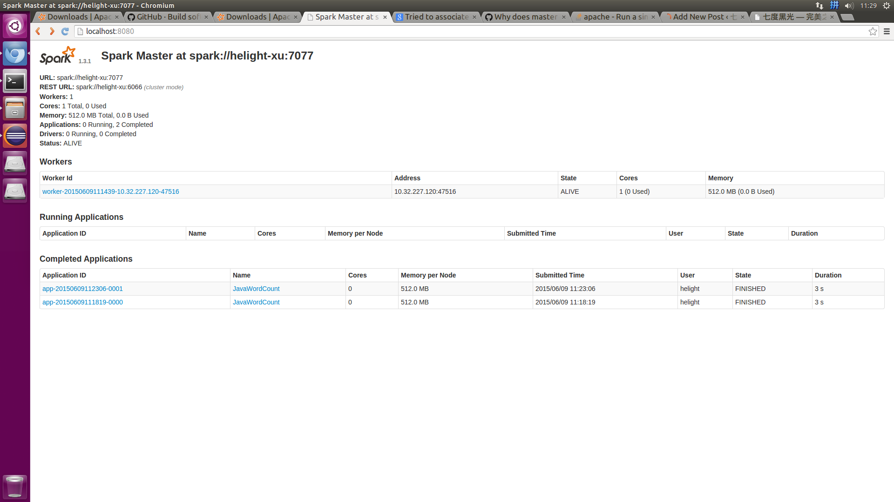

1.下载,安装spark和scala:
http://spark.apache.org/downloads.html
下载1.3.1的hadoop2.6版本. spark-1.3.1-bin-hadoop2.6.tgz
下载到本地之后直接解压即可:
helight@helight-xu:/data/spark$ tar zxf spark-1.3.1-bin-hadoop2.6.tgz
http://www.scala-lang.org/download/
下载scala,2.11.6,也是直接解压即可:
helight@helight-xu:/data/spark$ tar zxf scala-2.11.6.tgz
安装spark和scala直接配置环境变量即可,可以直接写到 系统环境变量配置文件/etc/profile 或者写道用户配置文件中~/.bashrc中
export JAVA_HOME=/usr/lib/jvm/java-8-openjdk-amd64/
export SCALA_HOME=/data/spark/scala-2.11.6
export PATH=$PATH:$JAVA_HOME/bin:$SCALA_HOME/bin
以下是安装新版本的时候的一些参数，上周测试了以下 2.4.6 的版本，基本安装过程还是一样的。
export SPARK_SSH_OPTS="-p 3600" # 这个端口是 ssh 的端口，比如我的机器 ssh 的端口是 3600.
export SCALA_HOME=/data/spark/scala-2.12.12/
export JAVA_HOME=/usr/lib/jvm/java-1.8.0-openjdk
export PATH=$PATH:$JAVA_HOME/bin:$SCALA_HOME/bin
以上就是基本配置.
2.ssh本地互信登录配
这里和hadoop中的互信配置一样. 首先在机器上安装openssh-server和openssh-client.
helight@helight-xu:~/.ssh$ ssh-keygen
一直回车即可,不要输入任何东西
helight@helight-xu:~/.ssh$ ls
id_rsa id_rsa.pub known_hosts
helight@helight-xu:~/.ssh$ cat id_rsa.pub >authorized_keys
helight@helight-xu:~/.ssh$ ll
total 24
drwx------ 2 helight helight 4096 6月 8 15:06 ./
drwxr-xr-x 23 helight helight 4096 6月 9 09:59 ../
-rw------- 1 helight helight 400 6月 8 15:06 authorized_keys
-rw------- 1 helight helight 1679 6月 8 15:06 id_rsa
-rw-r--r-- 1 helight helight 400 6月 8 15:06 id_rsa.pub
-rw-r--r-- 1 helight helight 444 6月 8 15:21 known_hosts
authorized_keys文件的权限设置为600,如上,这里或需要重新注销登录一下才可以无密码登录
helight@helight-xu:~/.ssh$ ssh localhost
Welcome to Ubuntu 15.04 (GNU/Linux 3.19.0-20-generic x86_64)
* Documentation: https://help.ubuntu.com/
Last login: Mon Jun 8 15:20:51 2015 from localhost
helight@helight-xu:~$
如上面的登录方式,则表示本机无密码登录ok了.
3.spark启动配置
3.1 配置spark-env.sh
Copy一份文件spark-env.sh.template重命名为spark-env.sh，在文件末尾添加
export JAVA_HOME=/usr/lib/jvm/java-8-openjdk-amd64/
export SCALA_HOME=/data/spark/scala-2.11.6
export SPARK_MASTER_IP=localhost
export SPARK_WORKER_CORES=1
export SPARK_WORKER_INSTANCES=1
export SPARK_WORKER_MEMORY=512M
可以看到，JAVA_HOME和SCALA_HOME都关联上了。
赋予spark-env.sh可执行权限
chmod 777 spark-env.sh
3.2 配置slaves
Copy一份slaves.template文件重命名为slaves，添加机器名（或者ip，不过ip没试过）
# A Spark Worker will be started on each of the machines listed below.
# localhost
localhost
3.3配置spark-defaults.conf
Copy一份spark-defaults.conf.template重命名为spark-defaults.conf，把相关项打开（最后spark.executor.extraJavaOptions这项我目前还不知道使用，待研究）。
# Default system properties included when running spark-submit.
# This is useful for setting default environmental settings.
# Example:
spark.master spark://localhost:7077
spark.executor.memory 512m
spark.eventLog.enabled true
spark.eventLog.dir /data/spark/spark-1.3.1-bin-hadoop2.6/logs/
spark.serializer org.apache.spark.serializer.KryoSerializer
spark.driver.memory 512m
3.4 配置log4j.properties
Copy一份log4j.properties.template文件重命名为log4j.properties即可。内容如下：
# Set everything to be logged to the console
log4j.rootCategory=INFO, console
log4j.appender.console=org.apache.log4j.ConsoleAppender
log4j.appender.console.target=System.err
log4j.appender.console.layout=org.apache.log4j.PatternLayout
log4j.appender.console.layout.ConversionPattern=%d{yy/MM/dd HH:mm:ss} %p %c{1}: %m%n
# Settings to quiet third party logs that are too verbose
log4j.logger.org.eclipse.jetty=WARN
log4j.logger.org.eclipse.jetty.util.component.AbstractLifeCycle=ERROR
log4j.logger.org.apache.spark.repl.SparkIMain$exprTyper=INFO
log4j.logger.org.apache.spark.repl.SparkILoop$SparkILoopInterpreter=INFO
3.5启动spark
helight@helight-xu:/data/spark/spark_hadoop$ ./sbin/start-all.sh
starting org.apache.spark.deploy.master.Master, logging to /data/spark/spark-1.3.1-bin-hadoop2.6/sbin/../logs/spark-helight-org.apache.spark.deploy.master.Master-1-helight-xu.out
helight-xu: starting org.apache.spark.deploy.worker.Worker, logging to /data/spark/spark-1.3.1-bin-hadoop2.6/sbin/../logs/spark-helight-org.apache.spark.deploy.worker.Worker-1-helight-xu.out
helight@helight-xu:/data/spark/spark_hadoop$
查看启动进程:
helight@helight-xu:/data/spark/spark_hadoop$ jps
Picked up JAVA_TOOL_OPTIONS: -javaagent:/usr/share/java/jayatanaag.jar
2625 Worker
2758 Jps
2410 Master
helight@helight-xu:/data/spark/spark_hadoop$
helight@helight-xu:/data/spark/spark_hadoop/conf$ ps axu|grep spark
helight 2410 0.7 3.6 4064160 292772 pts/0 Sl 09:44 0:34 /usr/lib/jvm/java-8-openjdk-amd64//bin/java -cp /data/spark/spark-1.3.1-bin-hadoop2.6/sbin/../conf:/data/spark/spark-1.3.1-bin-hadoop2.6/lib/spark-assembly-1.3.1-hadoop2.6.0.jar:/data/spark/spark-1.3.1-bin-hadoop2.6/lib/datanucleus-core-3.2.10.jar:/data/spark/spark-1.3.1-bin-hadoop2.6/lib/datanucleus-api-jdo-3.2.6.jar:/data/spark/spark-1.3.1-bin-hadoop2.6/lib/datanucleus-rdbms-3.2.9.jar -Dspark.akka.logLifecycleEvents=true -Xms512m -Xmx512m org.apache.spark.deploy.master.Master --ip helight-xu --port 7077 --webui-port 8080
helight 2625 0.7 3.3 4041960 270248 ? Sl 09:44 0:34 /usr/lib/jvm/java-8-openjdk-amd64//bin/java -cp /data/spark/spark-1.3.1-bin-hadoop2.6/sbin/../conf:/data/spark/spark-1.3.1-bin-hadoop2.6/lib/spark-assembly-1.3.1-hadoop2.6.0.jar:/data/spark/spark-1.3.1-bin-hadoop2.6/lib/datanucleus-core-3.2.10.jar:/data/spark/spark-1.3.1-bin-hadoop2.6/lib/datanucleus-api-jdo-3.2.6.jar:/data/spark/spark-1.3.1-bin-hadoop2.6/lib/datanucleus-rdbms-3.2.9.jar -Dspark.akka.logLifecycleEvents=true -Xms512m -Xmx512m org.apache.spark.deploy.worker.Worker spark://helight-xu:7077 --webui-port 8081
helight 3849 0.0 0.0 11176 2648 pts/0 S+ 10:57 0:00 grep --color=auto spark
helight@helight-xu:/data/spark/spark_hadoop/conf$
spark的web ui界面:
http://localhost:8080/

3.6提交任务:
./bin/spark-submit --class org.zhwen.test.spark_test.WordCount --master spark://helight-xu:7077 /data/helight/workspace/spark_test/target/idata-task-project-0.0.1-xu-jar-with-dependencies.jar

关注「黑光技术」，关注大数据+微服务